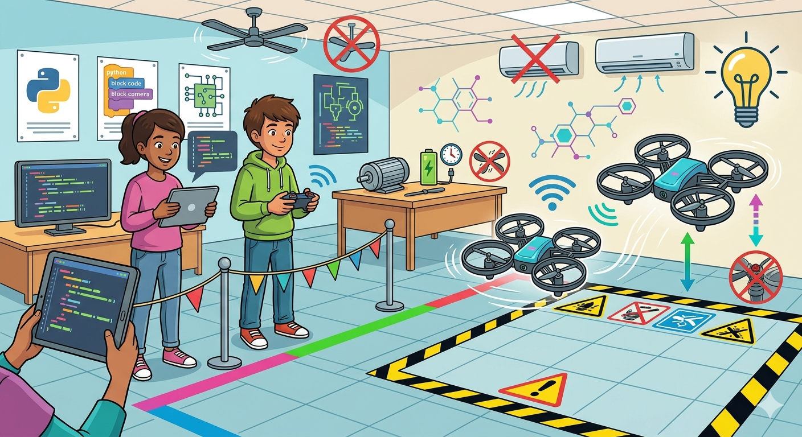

A diferencia de los drones de carreras o los que graban películas, los drones educativos están hechos para aprender con ellos. Son como pequeños robots voladores diseñados para ser resistentes, seguros y, sobre todo, para obedecer tus líneas de código.

- 1. ¿Qué los hace especiales?
- Tú les dices qué hacer: Puedes programarlos usando bloques (como en Scratch) si estás empezando, o con texto (Python) si ya eres un experto.
- Tienen "ojos" inteligentes: Usan sensores especiales (barómetros y/o cámaras inferiores) para quedarse quietos en el aire sin necesidad de GPS.
- Llevan "armadura": Son livianos y tienen protectores que cubren las hélices por completo. Esto evita que se rompan (o rompan algo) si chocan.
- Conexión directa: El dron crea su propia red Wi-Fi para que conectes tu tablet o computadora sin cables.
- 2. ¿Por qué volamos generalmente bajo techo?
- Aunque parezca divertido volar afuera, estos drones prefieren estar en el aula por tres razones:
- El viento es su enemigo: Como son tan livianos, una brisa suave puede llevárselos lejos.
- Pisos con texturas; sus sensores leen el suelo para ubicarse. Un salón bien iluminado es el lugar perfecto para que no se "pierdan".
- Seguridad total; volar en clase es más seguro y no necesitamos permisos especiales de aviación ni arriesgamos efectos indeseados sobre vecinos y us provacidad.
- Aunque parezca divertido volar afuera, estos drones prefieren estar en el aula por tres razones:
- 3. Guía de mantenimiento (¡Cuida tu equipo!)
Para que el dron dure todo el año (y más, en lo posible), sigue estas reglas de oro:- Baterías: Nunca las guardes calientes después de volar. Si se quedan sin carga mucho tiempo, se pueden arruinar. ¡Cárgalas siempre con supervisión!
- Motores limpios: Revisa que no tengan pelos, hilos o polvo en el eje de las hélices. Si algo se enreda, el motor se esfuerza de más y se quema.
- Hélices sanas: Si ves una hélice doblada o con una grieta, no despegues. Una hélice rota hace que el dron vuele mal.
- 4. Seguridad: Antes de despegar
Tu "pista de aterrizaje y despegue" debe cumplir con estas reglas para evitar accidentes:- Distancia social: Nadie puede estar a menos de 2 metros del dron cuando va a arrancar o volar. Si es necesario delimitar el espacio de vuelo con cintas en el suelo o con cordeles atados a sillas, como armando un "corralito".
- Piso despejado: Quita mochilas, cables o cualquier cosa con la que el dron pueda tropezar.
- Poner límites también de altura: Programa siempre considerando una altura máxima (por ejemplo, 2 metros) para no chocar con el techo o las luces.
- Cuidado con ventiladores de techo, aires acondicionados o ventanas abiertas. Tenerlos apagados y evitar corrientes de aire.
- Buena luz: No vueles a oscuras ni cerca de espejos; los sensores se confunden y el dron puede volverse inestable.
¿Listo para el despegue? Recuerda que no solo volarás, ¡estarás programando la tecnología que vuela al mismo tiempo que cuidas la seguridad!